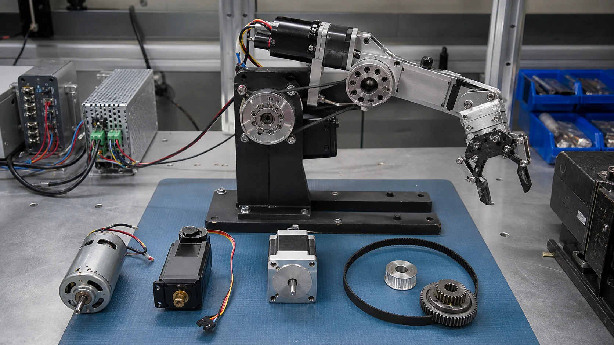
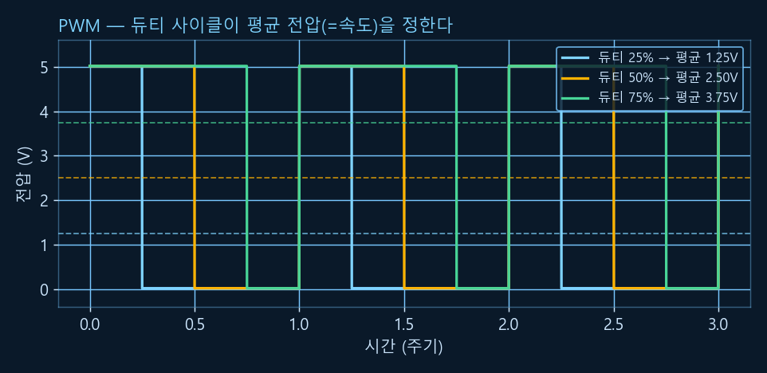
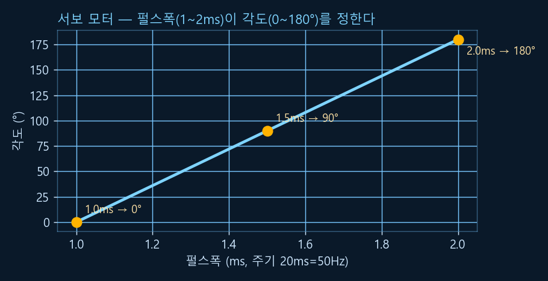
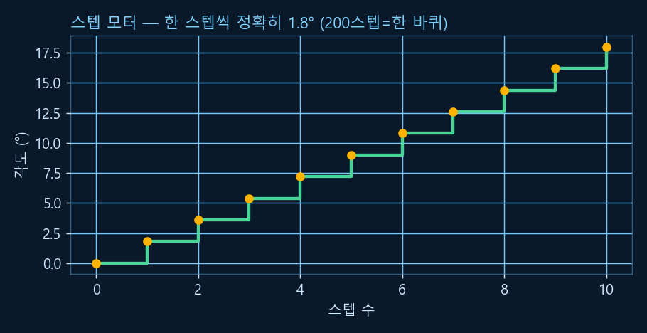
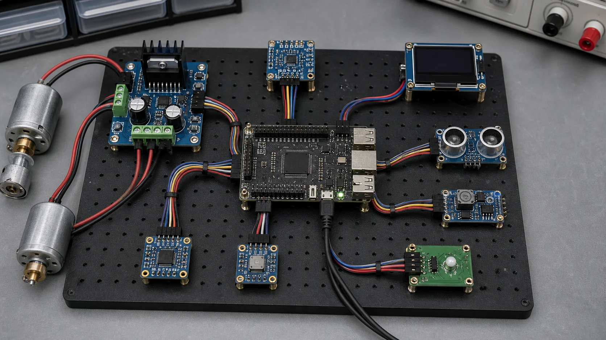

Chapter R3: 액추에이터 & 임베디드 기초
센서가 "감각"이라면 액추에이터는 로봇의 "근육"입니다. DC·서보·스텝 모터가 각각 어떻게 움직이는지, 디지털 신호로 속도·각도를 조절하는 PWM, 그리고 이 모든 걸 제어하는 임베디드 기초(GPIO·I2C·SPI·UART·실시간성)를 다룹니다. (모터 제어의 수학부는 Python으로 실행 검증했고, 하드웨어 제어 코드는 라즈베리파이 gpiozero 표준 패턴으로 제시합니다.)
1. 액추에이터란? — 로봇의 근육
액추에이터(actuator)는 전기 에너지를 물리적 운동(회전·직선 이동)으로 바꾸는 장치입니다. 로보틱스에서 가장 흔한 액추에이터가 전기 모터이고, 위에서 본 세 종류(DC·서보·스텝)가 대부분을 차지합니다.
💡 비유로 이해하기: 센서가 눈·귀라면, 액추에이터는 팔·다리
R2의 센서가 "세상을 들여오는" 입력이라면, 액추에이터는 "세상에 영향을 주는" 출력입니다. 제어기(뇌)가 센서값을 보고 "바퀴를 60%로 돌려라", "팔을 90도로 펴라" 같은 명령을 내리면, 액추에이터가 그걸 실제 움직임으로 만듭니다. 이 챕터는 그 명령을 전기 신호로 정확히 표현하는 법을 배웁니다.

2. DC 모터 — 가장 단순한 회전
DC 모터는 전압을 걸면 계속 도는, 가장 단순하고 흔한 모터입니다. 두 가지만 기억하면 됩니다.
- 속도 ∝ 전압: 전압이 높을수록 빨리 돕니다. 그런데 디지털 제어기는 "중간 전압"을 직접 못 만듭니다 → 그래서 PWM(다음 절)을 씁니다.
- 방향 = 극성: 두 단자의 +/−를 바꾸면 반대로 돕니다. 이 극성을 전자적으로 뒤집는 회로가 H-브리지(H-bridge)입니다(모터 드라이버 칩에 내장).
DC 모터는 빠르지만 "지금 몇 도인지"는 스스로 모릅니다(위치 피드백 없음). 그래서 정확한 위치가 필요하면 R2의 엔코더를 붙여 회전을 셉니다.
3. PWM — 디지털로 아날로그 흉내내기
디지털 핀은 ON(예: 5V)과 OFF(0V) 두 값만 냅니다. 그런데 아주 빠르게 켰다 껐다 하면서 켜진 시간의 비율을 조절하면, 모터·LED는 그 평균값을 느낍니다. 이것이 PWM(펄스폭 변조)입니다. 켜진 시간 비율을 듀티 사이클(duty cycle)이라 합니다.
💡 비유로 이해하기: 형광등 깜빡임 vs 밝기 조절
형광등을 1초에 한 번 켰다 끄면 깜빡임이 보이지만, 1초에 1000번 켰다 끄면 우리 눈엔 "절반 밝기"로 보입니다. PWM도 똑같습니다 — 너무 빨라서 모터는 개별 펄스를 못 느끼고 평균 전압만 느껴 그 속도로 돕니다. 듀티 50%면 평균 전압의 절반입니다.

def pwm_average(duty, v_supply=5.0):
# 평균 전압 = 듀티 사이클 × 공급 전압 (duty는 0.0~1.0)
return duty * v_supply
for d in [0.0, 0.25, 0.5, 0.75, 1.0]:
print(f"듀티 {int(d*100):3d}% -> 평균 {pwm_average(d):.2f} V")✅ 실행 결과 (검증됨)
듀티 0% -> 평균 0.00 V 듀티 25% -> 평균 1.25 V 듀티 50% -> 평균 2.50 V 듀티 75% -> 평균 3.75 V 듀티 100% -> 평균 5.00 V
4. 서보 모터 — 정해진 각도로
서보 모터는 "이 각도로 가서 유지해"라고 명령하는 모터입니다. 내부에 위치 센서와 제어 회로(폐루프)가 있어, 명령한 각도를 스스로 잡고 버팁니다. 로봇팔 관절·조향에 씁니다.
표준 RC 서보는 50Hz(주기 20ms)로 펄스를 받고, 펄스의 폭(1~2ms)이 목표 각도를 정합니다 — 1.0ms → 0°, 1.5ms → 90°(중앙), 2.0ms → 180°. PWM이 "켜진 비율"로 속도를 정했다면, 서보는 "펄스 폭"으로 위치를 정합니다.

def pulse_to_angle(pulse_ms):
# 표준 RC 서보: 1.0ms->0°, 2.0ms->180° (그 사이는 선형)
return (pulse_ms - 1.0) / (2.0 - 1.0) * 180.0
for p in [1.0, 1.5, 2.0]:
print(f"펄스폭 {p}ms -> {pulse_to_angle(p):.0f}°")✅ 실행 결과 (검증됨)
펄스폭 1.0ms -> 0° 펄스폭 1.5ms -> 90° 펄스폭 2.0ms -> 180°
5. 스텝 모터 — 한 칸씩 정밀하게
스텝 모터는 전기 펄스 하나에 정해진 각도(한 스텝)만큼 돌도록 설계된 모터입니다. 이상적으로는 펄스를 세기만 해도 위치를 알 수 있어(엔코더 없이) 정밀 위치 제어가 가능합니다 — 3D 프린터·CNC의 주인공입니다.
스텝각 = 360° ÷ 한 바퀴 스텝 수. 흔한 모터는 한 바퀴에 200스텝이라 스텝각이 1.8°입니다. 이상적으로 50스텝을 보내면 90° 회전합니다. 단, 너무 빨리 보내거나 부하가 크면 스텝을 놓칠(skip) 수 있고(피드백이 없어 모름), 마이크로스테핑으로 한 스텝을 더 잘게 나눠 부드럽게 만들 수 있습니다.

def step_angle(steps_per_rev):
# 한 스텝의 각도 = 360도를 '한 바퀴 스텝 수'로 나눔
return 360 / steps_per_rev
spr = 200 # 한 바퀴 200스텝 (흔한 사양)
print("스텝각:", step_angle(spr), "도") # 1.8
print("50스텝 회전:", 50 * step_angle(spr), "도") # 90.0✅ 실행 결과 (검증됨)
스텝각: 1.8 도 50스텝 회전: 90.0 도
6. GPIO & 임베디드 — 모터를 코드로 움직이기
이 모터들을 실제로 돌리려면 컴퓨터의 핀으로 신호를 내보내야 합니다. GPIO(General-Purpose Input/Output)는 그 범용 디지털 핀으로, 출력 모드면 HIGH(켜짐)/LOW(꺼짐)를 내보내고 입력 모드면 버튼·스위치 상태를 읽습니다.
MCU (마이크로컨트롤러)
아두이노·STM32 등. OS 없이 코드가 직접 돈다 → 실시간성·정밀 타이밍에 강함. PWM·센서 읽기 같은 저수준 제어 담당.
SBC (싱글보드 컴퓨터)
라즈베리파이·젯슨 등. 리눅스 OS 위에서 Python·카메라·네트워크 → 고수준 연산(인식·계획)에 강함. 흔히 MCU와 역할 분담.
파이썬에서는 라즈베리파이의 gpiozero 라이브러리로 모터·서보를 간단히 다룹니다. 아래는 공식 표준 패턴입니다(이 학습 환경에는 GPIO 하드웨어가 없어 실행은 안 되지만, 라즈베리파이에서 그대로 동작합니다).
# 실행 환경: Raspberry Pi + gpiozero (pip install gpiozero)
# ※ 이 학습 환경엔 GPIO가 없어 실행되지 않습니다 — 패턴 학습용
from gpiozero import Motor, AngularServo
from time import sleep
# DC 모터: H-브리지 드라이버의 두 입력 핀(GPIO 번호)에 연결
motor = Motor(forward=17, backward=18)
motor.forward(0.6) # 60% 속도로 전진 (gpiozero가 내부적으로 PWM 생성)
sleep(2)
motor.stop()
# 서보 모터: 각도로 직접 명령
servo = AngularServo(27, min_angle=0, max_angle=180)
servo.angle = 90 # 90도(중앙)로 이동
sleep(1)
servo.angle = 0 # 0도로 이동앞에서 손으로 계산한 PWM 듀티·서보 펄스폭을 gpiozero가 알아서 만들어 줍니다 — motor.forward(0.6)이 듀티 60% PWM을, servo.angle = 90이 1.5ms 펄스를 생성합니다.
7. 통신 프로토콜 — I2C · SPI · UART
센서·드라이버 같은 부품들은 제어기와 직렬 통신으로 데이터를 주고받습니다. 대표 3종을 핀 수·속도·용도로 비교하면 선택이 쉽습니다.
💡 비유로 이해하기: 세 가지 대화 방식
UART는 두 사람의 1:1 전화(서로 약속한 속도로), I2C는 한 회의실에서 이름표(주소)로 부르는 다자 회의(선 2개), SPI는 빠른 전용 회선이지만 상대가 늘어날 때마다 선택 버튼(CS)이 하나씩 더 필요한 방식입니다.

| 프로토콜 | 선(핀) | 속도 | 특징 / 용도 |
|---|---|---|---|
| I2C | 2선 (SDA·SCL) | 중속 | 주소로 여러 장치를 한 버스에 연결. IMU·소형 센서 다수 연결에 편리. |
| SPI | 4선 (MOSI·MISO·SCLK·CS) | 고속 (전이중) | 빠른 데이터(디스플레이·SD카드). 장치마다 CS 선이 따로 필요. |
| UART | 2선 (TX·RX) | 중속 (비동기) | 1:1 통신. GPS·블루투스·디버그 콘솔. 보드레이트(예 9600·115200) 약속 필요. |
고르는 감: 센서 여러 개를 선 적게 → I2C, 빠른 전송 → SPI, 장치 하나와 단순 연결 → UART.
8. 실시간성 — 제때 도는 제어 루프
로봇 제어는 보통 고정된 주기로 도는 루프입니다 — 예: 1초에 100번(100Hz)씩 "센서 읽기 → 계산 → 모터 명령". 이때 중요한 건 매번 정확히 같은 간격으로 도는 것(실시간성)입니다. 간격이 들쭉날쭉(지터, jitter)하면 제어가 불안정해집니다.
⚠️ 왜 MCU가 실시간에 강한가
라즈베리파이 같은 OS 기반(SBC)은 여러 프로그램을 동시에 돌리느라 가끔 제어 루프가 밀립니다(비결정적 지연). 반면 MCU는 OS 없이 코드가 직접 돌고 인터럽트로 정확한 타이밍을 보장해 결정론적(deterministic)입니다. 그래서 실무에선 "MCU가 실시간 저수준 제어(모터·PWM), SBC가 고수준 연산(인식·계획)"으로 역할을 나눕니다. 엄격한 마감 시간을 반드시 지켜야 하면 '하드 실시간', 가끔 늦어도 되면 '소프트 실시간'이라 부릅니다.
9. 한 장 요약
| 주제 | 한 줄 정리 | 핵심 수치/공식 |
|---|---|---|
| DC 모터 | 빠른 연속 회전 | 속도∝전압, 방향=극성(H-브리지) |
| PWM | 빠른 On/Off로 평균값 조절 | 평균전압 = 듀티 × 공급전압 |
| 서보 모터 | 정해진 각도 유지(폐루프) | 1~2ms 펄스 @50Hz → 0~180° |
| 스텝 모터 | 한 스텝씩 정밀(오픈루프) | 스텝각 = 360 / 스텝수 (1.8°) |
| GPIO | 범용 디지털 입출력 핀 | HIGH/LOW, gpiozero |
| I2C / SPI / UART | 직렬 통신 3종 | 2선주소 / 4선고속 / 2선1:1 |
| 실시간성 | 일정 주기·낮은 지터 | MCU=결정론, SBC=고수준 |
이제 로봇은 감지(R2)하고 움직일(R3) 수 있습니다. 다음 R1의 좌표·변환과 합쳐, R4(키네매틱스)에서 "모터를 얼마나 돌리면 팔 끝이 어디로 가는지"를 계산합니다. 💪